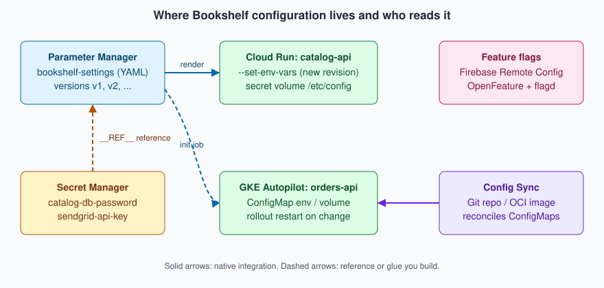

Runtime Configuration
|
This content was generated with the assistance of AI and should be verified against the official documentation before being relied on in production. |
Commands and behaviour on this page are current for the gcloud CLI 586.x line (gcloud parametermanager command
group, GA since 2025-03-27), Cloud Run and GKE 1.35 (Regular channel) documentation, Config Sync as included in GKE
since 2025-09-02, Spring Cloud GCP 8.x for Spring Boot 4 (7.4.x for Spring Boot 3) and Terraform hashicorp/google v8
(checked 2026-10-01); re-verify against gcloud version, gcloud parametermanager --help and the linked reference
pages before relying on them in a pipeline. Examples use the placeholder project my-project-id, the placeholder
project number 123456789012 and the region us-central1; all are stand-ins for your own values.
Most of what a running service needs to know is not code: a page size, an upstream timeout, the address of another
service, a switch that turns a new screen on for a tenth of the traffic. This page covers the Google Cloud ways to
keep such values outside the build and, where it is worth the machinery, to change them while the service keeps
running: Parameter Manager (versioned configuration with references to secrets), environment variables and secret
volumes on Cloud Run, ConfigMaps and Config Sync on GKE, and a short look at feature-flag services. Secrets
themselves — the database password, the SendGrid API key, Cloud KMS — are deliberately not repeated here; they live
on Secret Manager and Cloud KMS, and this page only shows how the mechanisms below
reference them. Application-side loading in Spring Boot (property-source order, @ConfigurationProperties,
@RefreshScope, the Kubernetes ConfigMap and secret imports) is on
Configuration and Profiles, and the Kubernetes objects themselves are on
ConfigMaps. For the counterparts on other clouds see
Runtime Configuration and Runtime Configuration.
The problem: configuration, secrets and flags
Bookshelf’s catalog-api (Cloud Run), orders-api (GKE Autopilot) and notifier (Cloud Run function) need three
different kinds of values, each with its own owner and change cadence:
-
Plain configuration — a log level, a page size, an upstream URL. Not sensitive, reviewable in a diff.
-
Secrets — the database credential, a third-party API key. Never plaintext at rest, access audited. Stored in Secret Manager and only referenced by the mechanisms on this page.
-
Feature flags — a boolean (or a value chosen per request or per user) that turns behaviour on without a build, so a feature ships dark, is switched on for a slice of traffic, then for everyone, then removed.
All three vary per environment (dev, staging, prod), and teams increasingly want to change some of them without
a rebuild. Those wishes pull in different directions: a value baked into a container image or a deployment manifest
is trivially reviewable and reproducible but needs a rollout; a value fetched at run time changes in minutes but can
break production without a pipeline noticing. The mechanisms below sit at different points on that line. Older guides
for Google Cloud only show environment variables on Cloud Functions; the managed, versioned service added since is
Parameter Manager, and the old Runtime Configurator is retired (see The retired Runtime Configurator).

Choosing a mechanism
| Mechanism | Best for | Change takes effect | Watch out for |
|---|---|---|---|
Cloud Run environment variables |
A handful of per-environment scalars ( |
On the next revision; every change creates one |
Visible in the console and |
Cloud Run secret as environment variable |
A credential an app reads once at startup |
On the next revision; pinned to a version |
|
Cloud Run secret volume |
A whole config file, or a credential that must rotate without a redeploy |
On the next read of the file (the volume always reads the latest version) |
Regional secrets are not supported on Cloud Run |
Parameter Manager |
Structured configuration (YAML or JSON) shared by several services, with named versions and rollback |
When a client reads or renders a version; you decide how often |
One more call (and one more IAM grant) at startup or refresh time |
Kubernetes ConfigMap |
Pod configuration on GKE as environment variables or files |
Environment variables: next pod start. Mounted files: eventually, without restart, unless |
Needs a rollout for env vars; objects are not versioned by Kubernetes |
Config Sync |
The same ConfigMaps and policies on many clusters, from Git or an OCI image |
On the next reconcile after a commit |
A GitOps repository is the source of truth; do not edit ConfigMaps by hand |
Firebase Remote Config, OpenFeature |
Feature flags and per-user or per-percentage rollouts |
When a client fetches or a provider streams the change |
Another service to operate; flags need an owner and an expiry date |
A practical default for Bookshelf: put scalars in environment variables set by the deployment pipeline, put anything
structured or shared in one Parameter Manager parameter named bookshelf-settings, keep credentials in Secret Manager
and refer to them from there, and add a flag service only when someone actually needs per-user rollout.
Parameter Manager
Parameter Manager is the Google Cloud service for application configuration. It is part of the Secret Manager product family (the console entry is under Security, next to Secret Manager) and became generally available on 2025-03-27. It stores each piece of configuration as a parameter with an ordered series of parameter versions, so a change is a new version and a rollback is "point the application at the previous version".
Concepts
- Parameter
-
A named container for one logical configuration, such as
bookshelf-settings. A parameter has a format fixed at creation:YAML,JSONorUNFORMATTED(any text). The names allow letters, digits, dashes and underscores, up to 63 characters, and cannot start with a dash. - Parameter version
-
One immutable payload of a parameter, with a version ID you choose (
v1,2026-10-01, up to 63 characters). Versions can be disabled and deleted. The aliaslatestselects the newest version; production code usually names a version explicitly so a bad edit cannot reach it by accident. - Global and regional parameters
-
A parameter is either global (location
global) or regional (for exampleus-central1). Regional parameters keep their data in one region and use regional endpoints, which matters for data residency; global parameters are the simpler default. The location is part of the parameter’s identity and cannot be changed. - Secret references
-
In a
YAMLorJSONparameter a value can point to a Secret Manager secret version instead of containing it. The reference is written asREF("//secretmanager.googleapis.com/projects/PROJECT_ID/secrets/SECRET_ID/versions/VERSION"). Parameter Manager resolves it when the version is rendered, so the secret never appears in the parameter’s stored payload, and Secret Manager keeps its own versioning, rotation and audit trail. Limits at the check date: a parameter version can hold up to 15 secret references, references work only in structured formats, and the referenced secret’s content must not itself be YAML or JSON. - Render
-
Reading a version in two forms: the payload as stored (with the
REFtext still in it) and the rendered payload with the secrets substituted. Rendering needs a different permission from reading the raw payload (see [parameter-manager-iam]). - Templates
-
Reusable parameter templates with their own versions, in Preview at the check date. Treat them as a way to standardise the shape of many similar parameters, and check the launch stage before depending on them.
Launch stages, pricing and quotas
Parameter Manager is generally available; its template feature is in Preview. Pricing is a small charge per stored parameter version and per access operation, with a monthly free allowance; the numbers change, so read the dated Secret Manager and Parameter Manager pricing page instead of copying figures from a blog post. The cost drivers are the number of versions you keep and how often the applications read them, so cache a rendered value for the life of a request batch or a few minutes rather than rendering per request. Quotas (versions per parameter, payload size, requests per minute) are listed on the quotas and limits page; request an increase there if a large fleet reads at startup in lockstep.
In the Google Cloud console
-
Select the project in the project picker, open Security > Secret Manager and choose the Parameter Manager tab (enable the Parameter Manager API when prompted, or enable it with the CLI first).
-
Choose Create parameter. Enter
bookshelf-settings, pick the format YAML, and choose Global (or a region for a regional parameter). Optionally add labels such asapp=bookshelfandenv=prod. -
Open the new parameter and choose New version. Name it
v1, paste the YAML payload shown below, and save. -
To check a secret reference, open the version and choose View rendered; the console shows the payload with the secret values substituted only if your principal holds the accessor roles.
-
Under Permissions, grant
roles/parametermanager.parameterAccessorto the service accounts that read the parameter (for example the Cloud Run service identity ofcatalog-api).
With the gcloud CLI
Enable the API, create a YAML parameter and add the first version from a file. The payload has plain settings and one
reference to the catalog-db-password secret created on Secret Manager and Cloud KMS:
export PROJECT_ID=$(gcloud config get-value project) # placeholder: my-project-id
export PROJECT_NUMBER=$(gcloud projects describe "$PROJECT_ID" --format='value(projectNumber)')
gcloud services enable parametermanager.googleapis.com secretmanager.googleapis.com
gcloud parametermanager parameters create bookshelf-settings \
--location=global \
--parameter-format=YAML \
--labels=app=bookshelf,env=prodDerived from Create a parameter.
# settings-v1.yaml
catalog:
pageSize: 25
logLevel: INFO
upstreamTimeoutMs: 2500
db:
host: 10.20.0.5
user: catalog_app
password: __REF__("//secretmanager.googleapis.com/projects/my-project-id/secrets/catalog-db-password/versions/3")gcloud parametermanager parameters versions create v1 \
--parameter=bookshelf-settings \
--location=global \
--payload-data-from-file=settings-v1.yaml
gcloud parametermanager parameters versions list \
--parameter=bookshelf-settings --location=global
# Read the raw payload (secret reference text still in it)
gcloud parametermanager parameters versions describe v1 \
--parameter=bookshelf-settings --location=globalDerived from Reference Secret Manager secrets in a parameter.
Regional parameters use the same commands with --location=us-central1. Rollback is not a command of its own: create
a new version with the earlier payload (or disable the bad version) and move the consumers back to the earlier ID.
Granting access and rendering
Three different principals are involved, and the third is the one people forget:
| Who | Needs | Why |
|---|---|---|
People or pipelines that edit configuration |
|
Create parameters and add versions |
Applications that only read |
|
Least privilege on the parameter, not the project |
The parameter itself |
|
Parameter Manager resolves |
The parameter’s principal identity is shown on the parameter’s page and returned by describe; it has the form
principal://parametermanager.googleapis.com/projects/PROJECT_NUMBER/uid/locations/global/parameters/PARAMETER_UID.
Grant it access to the secret (and only to the secrets it references), and give the application read access to the
parameter:
# Identity of the parameter (global parameters)
PARAM_UID=$(gcloud parametermanager parameters describe bookshelf-settings \
--location=global --format='value(policyMember.iamPolicyUidPrincipal)')
# 1. Let the parameter resolve the secret reference
gcloud secrets add-iam-policy-binding catalog-db-password \
--member="$PARAM_UID" \
--role="roles/secretmanager.secretAccessor"
# 2. Let catalog-api's service account render the parameter
gcloud parametermanager parameters add-iam-policy-binding bookshelf-settings \
--location=global \
--member="serviceAccount:catalog-api@${PROJECT_ID}.iam.gserviceaccount.com" \
--role="roles/parametermanager.parameterAccessor"
# 3. Render: the payload is returned base64-encoded in the response
gcloud parametermanager parameters versions render v1 \
--parameter=bookshelf-settings --location=globalDerived from Reference Secret Manager secrets in a parameter
and Render a parameter version.
The exact field that carries the principal identifier can differ between gcloud releases; if the --format expression
above prints nothing, run describe without it and copy the principal:// value shown.
Terraform alternative
resource "google_parameter_manager_parameter" "settings" {
parameter_id = "bookshelf-settings"
format = "YAML"
labels = { app = "bookshelf", env = "prod" }
}
resource "google_parameter_manager_parameter_version" "v1" {
parameter = google_parameter_manager_parameter.settings.id
parameter_version_id = "v1"
parameter_data = file("${path.module}/settings-v1.yaml")
}
resource "google_secret_manager_secret_iam_member" "param_reads_secret" {
secret_id = google_secret_manager_secret.catalog_db_password.id
role = "roles/secretmanager.secretAccessor"
member = google_parameter_manager_parameter.settings.policy_member[0].iam_policy_uid_principal
}Derived from the google_parameter_manager_parameter
resource page of the hashicorp/google provider.
Reading a parameter from Java
The Google Cloud Client Libraries include a Parameter Manager client (google-cloud-parametermanager, managed by
the libraries-bom). It uses Application Default Credentials, so on Cloud Run and GKE it picks up the attached service
account or Workload Identity Federation for GKE without any key file. For local work, impersonate a service account
instead of downloading a key (gcloud auth application-default login --impersonate-service-account=…).
package com.example.bookshelf.config;
import com.google.cloud.parametermanager.v1.ParameterManagerClient;
import com.google.cloud.parametermanager.v1.ParameterVersionName;
import com.google.cloud.parametermanager.v1.RenderParameterVersionResponse;
import java.io.IOException;
public final class SettingsLoader {
/** Renders a YAML parameter version, with secret references already resolved. */
public String loadRendered(String projectId, String parameterId, String versionId)
throws IOException {
try (ParameterManagerClient client = ParameterManagerClient.create()) {
ParameterVersionName name =
ParameterVersionName.of(projectId, "global", parameterId, versionId);
RenderParameterVersionResponse response = client.renderParameterVersion(name);
return response.getRenderedPayload().toStringUtf8();
}
}
}Derived from the Parameter Manager overview
and its client library samples; check the package and method names against the library version your libraries-bom
selects. Regional parameters need a client built with the regional endpoint
(ParameterManagerSettings.newBuilder().setEndpoint("parametermanager.us-central1.rep.googleapis.com:443")).
Spring Boot integration: at the check date there is no Parameter Manager property source in the Spring Cloud GCP
starters comparable to the sm@ Secret Manager import (see Secret Manager and Cloud KMS),
so verify the current starter documentation before assuming one. The reliable pattern is to render the YAML in a small
bean or EnvironmentPostProcessor at startup, parse it and expose it through @ConfigurationProperties as described
on Configuration and Profiles. An alternative that needs no code is to render the
parameter before the process starts (see the Cloud Run and GKE sections below) and point Spring at the resulting file
with spring.config.import=optional:file:/etc/config/settings.yaml.
Refresh strategies
Parameter Manager does not push changes to running code, and at the check date it has no change notification of its own to subscribe to, so choose one of these:
-
Read at startup, change by revision. Render the pinned version when the instance starts; to change configuration, create a new version and roll a new Cloud Run revision or Kubernetes rollout that names it. Simple, auditable, rollback is a redeploy. This is the default recommendation.
-
Poll. A scheduled task re-renders
latest(or a version named in a feature flag) every few minutes and swaps an in-memory snapshot. Combine with@RefreshScopeor a rebuilt@ConfigurationPropertiesbean. Cost is one access operation per poll per instance; add jitter so a fleet does not poll in lockstep. -
Event-driven. Secret Manager can publish Pub/Sub notifications when a secret version is added; a parameter referencing that secret can be re-rendered in the subscriber. Parameter versions themselves do not publish events at the check date, so a push model for plain configuration means your pipeline publishes a message after
versions create.
Cloud Run
Cloud Run takes configuration from the service definition: environment variables, secrets exposed as environment variables or volumes, and mounted volumes. Every change to any of these creates a new revision, so configuration changes are rollouts that can be rolled back, traffic-split and tested like code. The mechanics of revisions and traffic are on Cloud Run Scaling, Traffic and Jobs; service basics are on Cloud Run. Functions deployed as Cloud Run functions take the same flags; see Cloud Run Functions and Events.
In the Google Cloud console
-
Open Cloud Run, select the service
catalog-api, and choose Edit & deploy new revision. -
On the Containers tab, open Variables & Secrets. Under Environment variables choose Add variable and enter
CATALOG_PAGE_SIZE=25andLOG_LEVEL=INFO. -
Under Secrets choose Reference a secret, pick
catalog-db-password, and select either Exposed as environment variable (nameDB_PASSWORD, version3) or Mounted as volume (mount path/etc/secrets, versionlatest). -
Choose Deploy. The console shows the new revision and, if you do not send all traffic to it, you can keep the previous revision serving until you verify the change.
With the gcloud CLI
export REGION=us-central1
export SERVICE=catalog-api
# Replace all environment variables (variables not listed are removed)
gcloud run services update "$SERVICE" --region="$REGION" \
--set-env-vars=CATALOG_PAGE_SIZE=25,LOG_LEVEL=INFO
# Add or change one variable, keep the rest
gcloud run services update "$SERVICE" --region="$REGION" \
--update-env-vars=LOG_LEVEL=DEBUG
# Remove a variable
gcloud run services update "$SERVICE" --region="$REGION" \
--remove-env-vars=LOG_LEVEL
# Many values: a YAML file of KEY: value pairs, kept in Git
gcloud run services update "$SERVICE" --region="$REGION" \
--env-vars-file=env.prod.yamlDerived from Configure environment variables for services.
Values that contain commas (a list of origins, for example) need the alternate delimiter syntax
(--set-env-vars="@ORIGINS=a.example,b.example@LOG_LEVEL=INFO") or, more cleanly, the --env-vars-file form.
Reserved names such as PORT cannot be set. For a function, gcloud run deploy FUNCTION --source . --function ENTRY
--base-image … takes the same --set-env-vars flag as any other service (the older
gcloud functions deploy --set-env-vars form applies to first generation functions).
Environment variables are visible to anyone who can view the service, in the console, in gcloud run services
describe and in revision exports, so they are for configuration, not secrets.
Secrets as environment variables or volumes
--set-secrets (replace all), --update-secrets (add or change) and --remove-secrets attach Secret Manager secrets.
The two forms behave differently:
# As an environment variable: pin a version; resolved when an instance starts
gcloud run services update "$SERVICE" --region="$REGION" \
--update-secrets=DB_PASSWORD=catalog-db-password:3
# As a volume (the file's directory is the mount, the file is the secret):
# each read returns the latest version
gcloud run services update "$SERVICE" --region="$REGION" \
--update-secrets=/etc/secrets/db-password=catalog-db-password:latestDerived from Configure secrets for services.
The service’s runtime service account needs roles/secretmanager.secretAccessor on the secret (granted on the secret,
not the project). The mount path must contain the directory and the file name, two secrets cannot share a path, and
mounting over an existing directory hides its contents. Cloud Run does not support regional secrets, so a service
that needs one calls the Secret Manager API itself. For a rotating credential, prefer the volume: the next read of the
file sees the new version with no redeploy, whereas an environment variable keeps the value read at instance start.
A Parameter Manager file on Cloud Run
Cloud Run cannot yet mount a Parameter Manager parameter as a volume (check the Cloud Run documentation, which is the authority on what a volume source can be). Two patterns cover the gap:
-
Render in the application at startup, with the Java snippet above.
catalog-apiis given only the parameter name and the pinned version as environment variables (SETTINGS_PARAMETER=bookshelf-settings,SETTINGS_VERSION=v1) and fetches the rest. Changing configuration isversions create v2followed bygcloud run services update catalog-api --update-env-vars=SETTINGS_VERSION=v2, which is also the rollback point. -
Render before the app starts in an entrypoint script or a sidecar container that writes
/etc/config/settings.yamlinto a shared in-memory volume, then lets Spring import it. The sidecar runs thegcloud parametermanager parameters versions rendercommand or a small client; the shared volume is declared with--add-volume=name=config,type=in-memoryand--add-volume-mount.
Both need roles/parametermanager.parameterAccessor on the parameter for the service account, and the parameter’s own
identity needs access to the referenced secrets, as in the table above.
Kubernetes ConfigMaps on GKE
On GKE (Autopilot cluster bookshelf-gke in the Bookshelf scenario) configuration is the standard Kubernetes
mechanism, documented once for all clusters on ConfigMaps and, for Docker-level
orchestration concepts, Orchestration: Swarm Mode and Kubernetes. The Spring side of the same
objects is the ConfigMap section of Configuration and Profiles. GKE specifics are about
rollout, not the object.
A ConfigMap as environment variables and as a file
apiVersion: v1
kind: ConfigMap
metadata:
name: orders-api-config
namespace: bookshelf
data:
LOG_LEVEL: INFO
ORDERS_PAGE_SIZE: "50"
settings.yaml: |
orders:
confirmationDelaySeconds: 5
---
apiVersion: apps/v1
kind: Deployment
metadata:
name: orders-api
namespace: bookshelf
spec:
replicas: 2
selector:
matchLabels: { app: orders-api }
template:
metadata:
labels: { app: orders-api }
annotations:
# Changes when the ConfigMap content changes; set by CI or Helm
config-checksum: "REPLACE_WITH_SHA256_OF_CONFIGMAP"
spec:
containers:
- name: orders-api
image: us-central1-docker.pkg.dev/my-project-id/bookshelf/orders-api:1.4.0
envFrom:
- configMapRef:
name: orders-api-config
volumeMounts:
- name: config
mountPath: /etc/config
readOnly: true
volumes:
- name: config
configMap:
name: orders-api-config
items:
- key: settings.yaml
path: settings.yamlDerived from the Kubernetes ConfigMaps page and the GKE ConfigMap concept page.
gcloud container clusters get-credentials bookshelf-gke --region=us-central1
kubectl apply -f orders-api-config.yaml
kubectl -n bookshelf get configmap orders-api-config -o yamlDerived from Configure cluster access for kubectl.
What happens when the ConfigMap changes
Environment variables are read when a container starts. A changed ConfigMap does not reach running pods through
envFrom; a mounted file is refreshed by the kubelet after a delay of up to a minute or so, except when mounted with
subPath, which is never refreshed. The application must also notice the change (Spring reads files once unless it
reloads). Three practical answers:
-
Restart on purpose:
kubectl -n bookshelf rollout restart deployment/orders-api. Fine for manual changes. -
Checksum annotation: a hash of the ConfigMap in the pod template (as above, or
checksum/configset by Helm) makes any content change a new pod template, hence a rolling update, with the usual rollback (kubectl rollout undo). This is the recommended way to tie configuration to rollouts. -
Hot reload: mount the file as a directory volume and have the application watch it; Spring Cloud Kubernetes can reload on ConfigMap change, covered on Configuration and Profiles.
On Autopilot a rolling restart briefly runs old and new pods side by side, so the extra requests count against your
resource requests, and a PodDisruptionBudget protects availability during it; see
Deploying Microservices on GKE.
Config Sync: one source of truth for many clusters
Config Sync is the GitOps component of GKE fleets. Since 2025-09-02 it is included in GKE at no additional charge
(earlier it required a GKE Enterprise subscription), together with Policy Controller and the other fleet features.
It watches a source of truth — a Git repository, an OCI image or a Helm chart — and continuously reconciles the
cluster to match it, undoing manual drift. Two objects define what is watched: a RootSync (cluster-scoped objects and
many namespaces, managed by platform admins) and a RepoSync (a single namespace, managed by the team that owns it).
Use it for ConfigMaps that must be identical on every cluster of the fleet (feature switches, endpoints, quotas) and
for the policies that go with them; do not use it for per-cluster secrets.
gcloud services enable gkehub.googleapis.com anthosconfigmanagement.googleapis.com
# Register the cluster in the project fleet (if it is not already), then enable the feature
gcloud container clusters update bookshelf-gke --region=us-central1 \
--enable-fleet
gcloud beta container fleet config-management enableDerived from Install Config Sync (the exact feature-enable and per-membership apply commands have changed across gcloud releases; follow the current page for yours).
apiVersion: configsync.gke.io/v1beta1
kind: RootSync
metadata:
name: root-sync
namespace: config-management-system
spec:
sourceFormat: unstructured
sourceType: git
git:
repo: https://github.com/example-org/bookshelf-config
branch: main
dir: clusters/prod
auth: noneDerived from Config Sync overview.
auth: none suits a public repository only; for a private one use a read-only token stored in a Kubernetes secret, a
Secure Source Manager or GitHub app credential, or workload identity with Artifact Registry for an OCI source, as
described in the installation page. The repository then holds orders-api-config.yaml under clusters/prod, and a
commit is the change record: review in a pull request, merge, and Config Sync applies it. Pair the sync with the
checksum annotation or a controller such as Reloader so the pods pick the change up.
Getting Parameter Manager and Secret Manager values into a ConfigMap
There is no native "sync a Parameter Manager parameter into a ConfigMap" controller at the check date. State it plainly and choose one of these:
-
Render at deploy time. The pipeline runs
gcloud parametermanager parameters versions render, writes the result into the ConfigMap manifest or a Secret, and applies it (or commits it to the Config Sync repository for non-secret values only). Simple and auditable; the cluster never calls the parameter service. -
An init container or Job that renders the version at pod start and writes a file into a shared
emptyDir, using Workload Identity Federation for GKE androles/parametermanager.parameterAccessorgranted to the Kubernetes service account’s principal. -
The GKE Secret Manager add-on (
--enable-secret-manager) mounts Secret Manager secrets as files through the Secrets Store CSI driver and can sync them to Kubernetes Secrets; it covers secrets, not parameters. See Secret Manager and Cloud KMS. An External Secrets-style operator is the portable alternative.
Do not copy rendered secret values into a ConfigMap, which is not encrypted separately and is readable by anyone with
get configmaps; secrets belong in Secret Manager or Kubernetes Secrets with application-layer encryption enabled.
Feature flags
A feature flag is configuration with a lifetime and an owner. Two Google-hosted options and one open standard:
-
Firebase Remote Config stores key-value parameters with conditions (percentage, country, app version, audience) and serves them to mobile and web clients; a server-side variant, the Remote Config API for the Admin SDK, serves backend code. It is the natural choice if the product already uses Firebase, and it is covered at the surface level here only. See Firebase Remote Config.
-
OpenFeature with flagd. OpenFeature is a vendor-neutral flag API with providers for many back ends; flagd is a small open-source flag daemon that reads flag definitions from a file, a ConfigMap or an HTTP source and streams changes. On GKE it runs as a Deployment or a sidecar and the flag file is a ConfigMap managed by Config Sync, which gives flags a Git history and review. See OpenFeature.
-
A homemade flag in a Parameter Manager version works for coarse switches (
orders.newCheckout: false): read the rendered YAML on a timer and branch in code. It lacks targeting and gradual rollout; use it for kill switches, not experiments.
Whichever you choose, remove the flag when the rollout is complete; a flag that stays is permanent complexity.
The retired Runtime Configurator
Runtime Configurator was an older Google Cloud service that stored key-value configuration in hierarchical
"configurations" with "waiter" resources to block a deployment until a value appeared. It belongs to Deployment
Manager, whose end of support was 2026-04-01 (extended support for blockers until 2027-03-31) and whose shutdown is
scheduled for 2027-06-30; the replacement for Deployment Manager is Infrastructure Manager (managed Terraform), covered
on Infrastructure as Code. Older guides and some Cloud Functions tutorials still show
gcloud beta runtime-config; do not start new work on it. Migrate to Parameter Manager for configuration values, to
Secret Manager for secrets and to Pub/Sub or Cloud Workflows for the "wait until ready" role of waiters.
Precedence: which value wins
When several mechanisms define the same key, the application’s own rules decide, but the platform order is predictable and should be written down for each service.
| Order (highest first) | Cloud Run | Spring Boot on GKE |
|---|---|---|
1 |
Command-line arguments in the container |
Command-line arguments and |
2 |
Environment variables (including secret-backed ones) |
OS environment variables, including |
3 |
Files on mounted volumes (secret volume, in-memory config file) imported by the app |
|
4 |
Defaults in the image ( |
Defaults in the image |
Spring’s exact order, including profile-specific files, is on
Configuration and Profiles. A rendered Parameter Manager file imported with
spring.config.import sits below environment variables, which is what makes an emergency override possible without
touching the parameter.
Security and networking
-
Least privilege per parameter. Grant
parameterAccessoron one parameter to one service account, never on the project. Keep separate parameters per environment so a dev service account cannot render production configuration. -
No secrets in plain configuration. Use
REFreferences or Secret Manager; do not put credentials in parameters, ConfigMaps or Cloud Run environment variables. Detection tools commonly scan Git repositories, which is another reason to render from the service rather than committing. -
Audit. Admin Activity audit logs record parameter and version changes by default; enable Data Access audit logs for Parameter Manager and Secret Manager to log who rendered a version and who read a secret.
-
Customer-managed keys. Parameter payloads are encrypted by Google by default; regional parameters can use CMEK. Encryption keys are covered on Secret Manager and Cloud KMS.
-
Network path. The API is a Google API; reach it from private VPCs through Private Google Access or Private Service Connect for Google APIs (see VPC Networking on Google Cloud). VPC Service Controls perimeters can include
parametermanager.googleapis.comandsecretmanager.googleapis.com. -
Config Sync credentials. Prefer workload identity or short-lived tokens for private sources; a read-only deploy key is the minimum.
What changed recently, and what older guides still show
| Date | Change |
|---|---|
2024-08-22 |
Cloud Functions 2nd generation renamed Cloud Run functions; configuration flags are the Cloud Run ones. |
2025-03-27 |
Parameter Manager generally available. |
2025-09-02 |
Config Sync (with fleets, Policy Controller and Connect Gateway) included in GKE with no extra charge. |
2026-04-01 |
Deployment Manager, and with it Runtime Configurator, reached end of support; shutdown is scheduled for 2027-06-30. |
Older guides still show: environment variables on Cloud Functions as the only configuration option, gcloud beta
runtime-config for shared configuration, latest secret versions injected as environment variables in production, and
Config Sync described as part of a paid Anthos subscription. The current approach is Parameter Manager plus Secret
Manager references, pinned versions, and Config Sync as part of GKE.
Troubleshooting
| Symptom | Likely cause | Fix |
|---|---|---|
|
The caller lacks |
Grant the accessor role on the parameter to the runtime service account |
Render fails or returns an error naming a secret |
The parameter’s own principal identity cannot access the referenced secret, or the secret version is disabled |
Bind |
Reference text appears in the rendered output |
Parameter format is |
Use a |
Cloud Run revision still shows the old value |
The variable was set on a different service or region, or traffic still points at the previous revision |
Run |
Secret env var not updated after adding a secret version |
Environment variables are read when the instance starts |
Deploy a new revision, or use a volume for values that must rotate without a redeploy |
Pod does not see the new ConfigMap value |
Env vars are read at start; |
Roll the deployment (checksum annotation or |
Config Sync shows |
Invalid manifest in the repository, missing credentials, or someone edits the object by hand |
Run |
Startup slow or throttled by quota |
Every instance renders the parameter at once |
Cache the rendered value, add jitter, request a quota increase |
Clean up
Remove what this page created, in dependency order, so nothing keeps billing or keeps access open:
# GKE: ConfigMap, then the Config Sync source (if you enabled it for this exercise)
kubectl -n bookshelf delete -f orders-api-config.yaml --ignore-not-found
kubectl -n config-management-system delete rootsync root-sync --ignore-not-found
# Cloud Run: drop the variables and secret attachments you added
gcloud run services update catalog-api --region=us-central1 \
--remove-env-vars=CATALOG_PAGE_SIZE,LOG_LEVEL \
--remove-secrets=DB_PASSWORD
# Parameter Manager: delete versions, then the parameter
gcloud parametermanager parameters versions delete v1 \
--parameter=bookshelf-settings --location=global --quiet
gcloud parametermanager parameters delete bookshelf-settings \
--location=global --quiet
# IAM bindings that referenced the parameter or its identity
gcloud secrets remove-iam-policy-binding catalog-db-password \
--member="$PARAM_UID" --role="roles/secretmanager.secretAccessor"Delete the secret catalog-db-password itself on Secret Manager and Cloud KMS (secret versions
may be retained for the delayed-destruction period, if one is set). Disable Config Sync with the fleet feature commands
if no other cluster uses it. For a throwaway project, deleting the project removes everything at once after the
30-day pending-deletion window.
Related pages
-
Secret Manager and Cloud KMS — the secrets that parameters and services reference.
-
Cloud Run and Cloud Run Scaling, Traffic and Jobs — revisions and traffic splitting for configuration rollouts.
-
Deploying Microservices on GKE — Deployments, rollouts and Workload Identity Federation for GKE.
-
Configuration and Profiles — loading and refreshing configuration in Spring Boot.
-
ConfigMaps — the ConfigMap object in depth.
References
-
Parameter Manager overview: https://docs.cloud.google.com/secret-manager/parameter-manager/docs/overview
-
Create a parameter: https://docs.cloud.google.com/secret-manager/parameter-manager/docs/create-parameter
-
Reference secrets in a parameter: https://docs.cloud.google.com/secret-manager/parameter-manager/docs/reference-secrets-in-parameter
-
Render a parameter version: https://docs.cloud.google.com/secret-manager/parameter-manager/docs/render-parameter-version
-
Secret Manager and Parameter Manager pricing: https://cloud.google.com/secret-manager/pricing
-
Cloud Run environment variables: https://docs.cloud.google.com/run/docs/configuring/services/environment-variables
-
Cloud Run secrets: https://docs.cloud.google.com/run/docs/configuring/services/secrets
-
GKE ConfigMaps: https://docs.cloud.google.com/kubernetes-engine/docs/concepts/configmap
-
Config Sync overview: https://docs.cloud.google.com/kubernetes-engine/enterprise/config-sync/docs/overview
-
Install Config Sync: https://docs.cloud.google.com/kubernetes-engine/enterprise/config-sync/docs/how-to/installing-config-sync
-
Firebase Remote Config: https://firebase.google.com/docs/remote-config
-
OpenFeature: https://openfeature.dev/docs/reference/intro
-
Deployment Manager end of support: https://docs.cloud.google.com/deployment-manager/docs/deprecations
-
Runtime Configurator: https://docs.cloud.google.com/deployment-manager/runtime-configurator
-
Terraform
google_parameter_manager_parameter: https://registry.terraform.io/providers/hashicorp/google/latest/docs/resources/parameter_manager_parameter